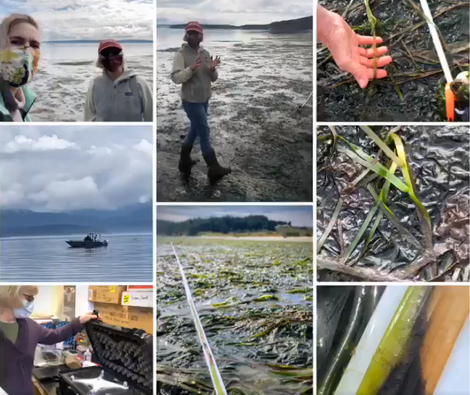
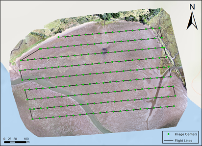

2 minutes read
Citizen Science GIS at the University of Central Florida supported by the National Science Foundation (NSF) uses Unmanned Aerial Systems (UAS), i.e. drones, to measure eelgrass meadow extent, patchiness, and dynamics through time. Dr. Timothy Hawthorne serves as the UCF PI and Dr. Bo Yang co-leads the UCF portion of this interdisciplinary project. This summer, our research partners continue to collect in situ transects along the west coast for monitoring eelgrass wasting disease.

Cornell fieldwork team led by Dr. Drew Harvell working in San Juan Island, WA
In the summer of 2019 our Citizen Science GIS drone team, Bo, Michael, and Hunter traveled along the west coast to map over twenty eelgrass meadows, collected drone mapping geographical data, and trained our research partners for drone mapping.
Field work in Coos Bay, OR
The drone training and Public Participation Geographic Information System (PPGIS) efforts have been rewarded this year. Although UCF travel is limited by COVID-19 this summer, we are still able to do the drone mapping with remote training and pre-programming the flight missions collaborating with our research partners.
Remote drone mapping taken place in WA (Pictured: Ryan, Tom, and Olivia)
The training efforts of last year by the Citizen Science GIS drone team initiated the drone mapping for novice users. This year, the Citizen Science GIS drone team further developed the drone training course to help research partners learn drone operations for mapping, and to get prepared for the FAA part 107 examination.

Pre-programmed drone mapping mission for eelgrass beds
The drone control app was used by the professional drone team to pre-program the flight missions based on the local weather and site conditions, while the local partners use the synchronized flight missions to do the drone mapping.
Our drone training course on GitHub
This collaborative drone mapping work combined the remote drone professionals with local biological scientists' efforts work achieving an effective data remote sensing data collection method under the COVID-19 pandemic.
Stay tuned for more remote drone mapping practice in California, Alaska, and Oregon. Stay updated on all of our exciting work at Citizen Science GIS by following us on our social media: Twitter, Facebook, Instagram, and Linkedin.
Updated: July 07, 2020